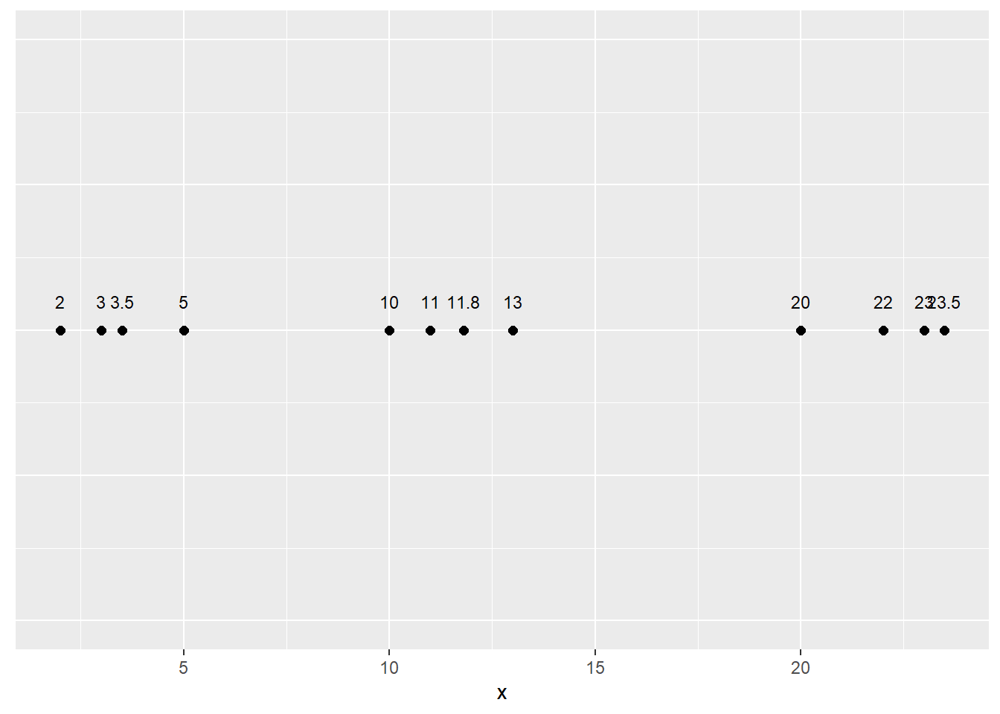
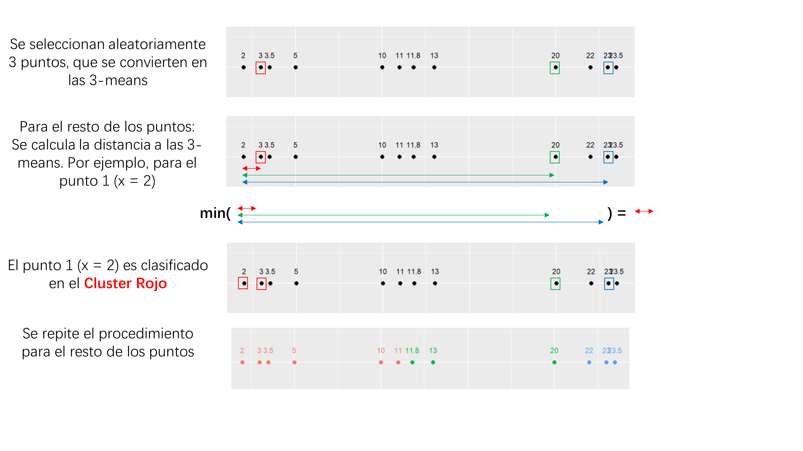
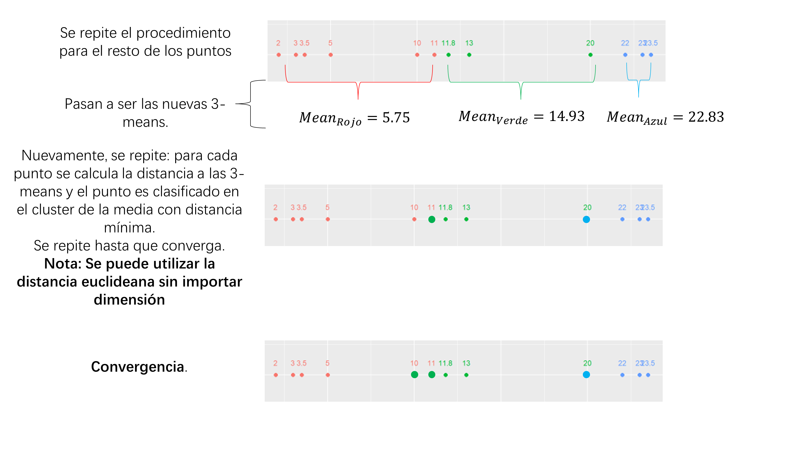
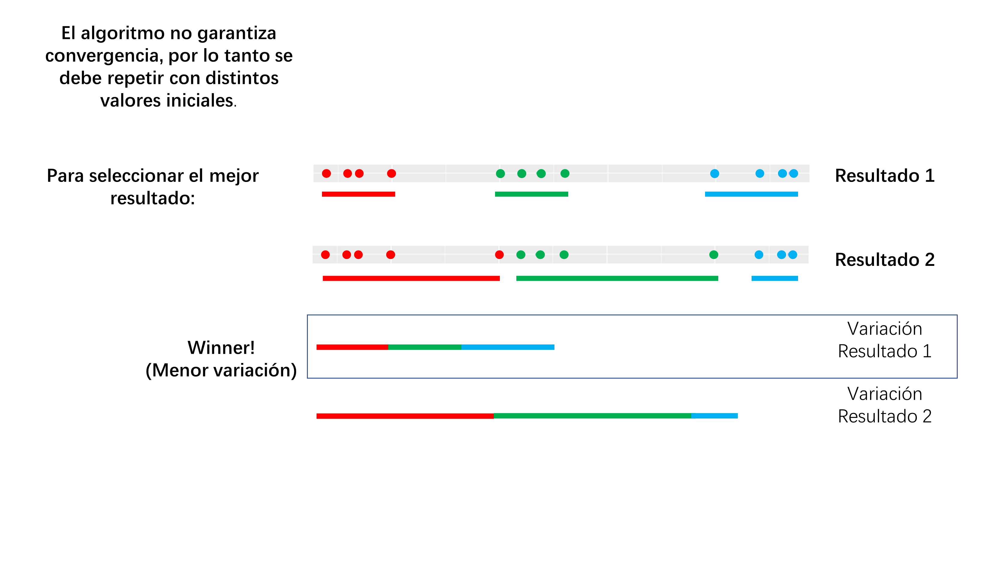
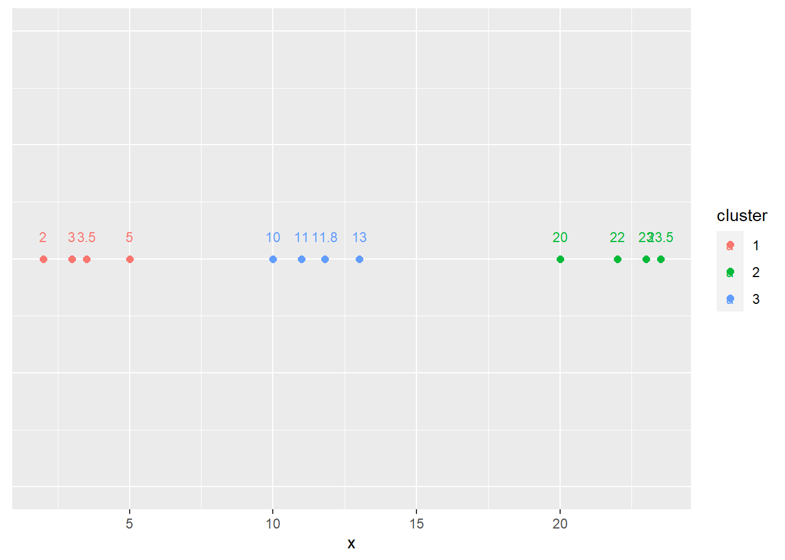
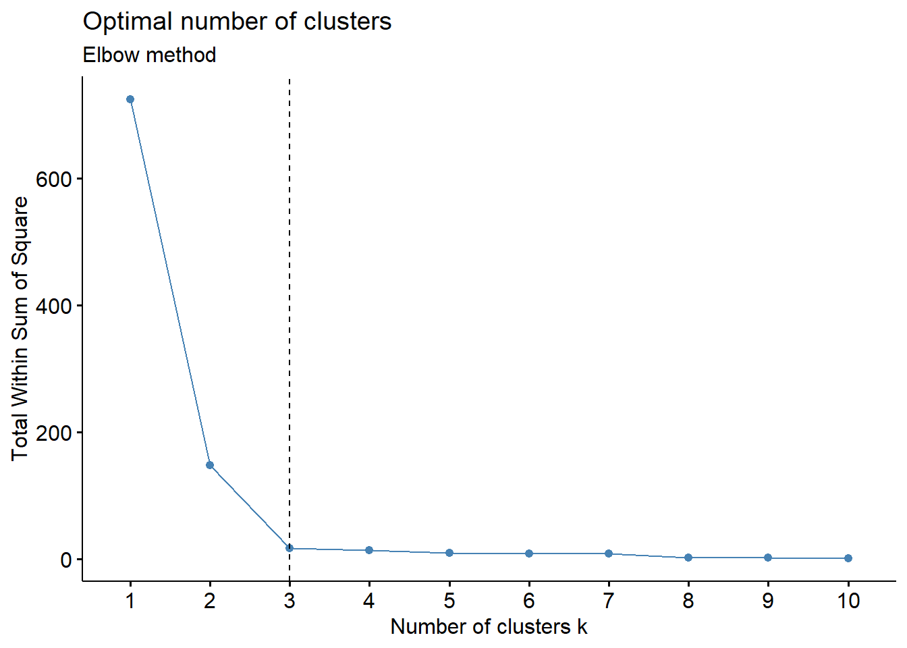

Show the code
library(ggplot2)
library(dplyr)
library(factoextra)
options(scipen = 999)library(ggplot2)
library(dplyr)
library(factoextra)
options(scipen = 999)datos <- data.frame(
x = c(
2, 3, 3.5, 5,
10, 11, 11.8, 13,
20, 22, 23, 23.5
)
)
ggplot(datos, aes(x = x, y = 1, label = x)) +
geom_point(size = 2) +
geom_text(size = 3, nudge_y = 0.05) +
ylim(c(0.5, 1.5)) +
theme(axis.title.y = element_blank(),
axis.text.y = element_blank(),
axis.ticks.y = element_blank())
Para este ejemplo, se seleccionara \(k = 3\).



set.seed(123)
km.res <- kmeans(datos,
centers = 3, # Total de medias (centroides)
nstart = 10 # Total de comienzos diferentes
)
datos2 <- datos
datos2$cluster <- factor(km.res$cluster)
ggplot(datos2, aes(x = x, y = 1, label = x, color = cluster)) +
geom_point(size = 2) +
geom_text(size = 3, nudge_y = 0.05) +
ylim(c(0.5, 1.5)) +
theme(axis.title.y = element_blank(),
axis.text.y = element_blank(),
axis.ticks.y = element_blank())
Visualmente sabíamos que \(k = 3\), veamoslo mediante R:
# "silhouette" (for average silhouette width),
# "wss" (for total within sum of square)
# "gap_stat" (for gap statistics)
fviz_nbclust(datos,
kmeans,
method = "wss") +
geom_vline(xintercept = 3, linetype = 2) +
labs(subtitle = "Elbow method")
Cada que se añade un nuevo clúster, se reduce la variación total (que es la suma de cuadrados dentro de cada clúster). Cuando cada cluster es un solo puntos, se tendrá que la variación es cero.
Sin embargo, observe que cuando se pasa de \(k= 3\) a \(k = 4\) o sucesivamente, la reducción varianza es mínima, por lo que se elige \(k=3\), como se había notado visualmente.
Seleccionar 3 puntos aleatoriamente y calcular distancia:
#|echo: false
# set.seed(5)
# points_selected <- sample(c(1:12), 3)
#
# datos2 <- datos %>% mutate(selected = if_else(row_number() %in% points_selected, 1, 0),
# cluster = if_else(selected == 1, row_number(), NA_integer_)
# )
#
# for (point in datos2$x){
# temp_df <- data.frame(cluster=integer(), distancia=double())
# for (point2 in datos2$x)
# {
# pos_point2 <- which(datos2$x == point2) # Posición del punto
# if (!is.na(datos2$cluster[pos_point2])) {
# new_distance <- data.frame(cluster = datos2$cluster[pos_point2],
# distance = abs(point - point2))
# temp_df <- rbind(temp_df, new_distance)
# }
# }
# datos2$cluster_final[which(datos2$x == point)] <- temp_df$cluster[which(temp_df$distance == min(temp_df$distance))]
# }
#
# for (point in datos2$x){
# if(!is.na(datos2$cluster[which(datos2$x == point)])){
# cluster <- datos2$cluster[which(datos2$x == point)]
# datos2$mean_value[which(datos2$x == point)] <- mean(datos2$x[datos2$cluster_final == cluster])
# }
# }
#
# datos2 <- datos2 %>% mutate(dist = abs(mean_value - x))
#
# datos2$cluster_final <- factor(datos2$cluster_final)
#
# ggplot(datos2, aes(x = x, y = 1, label = x,color = cluster_final)) +
# geom_point(size = 2) +
# geom_text(size = 3, nudge_y = 0.05) +
# ylim(c(0.5, 1.5)) +
# theme(axis.title.y = element_blank(),
# axis.text.y = element_blank(),
# axis.ticks.y = element_blank(),
# legend.position = "none")